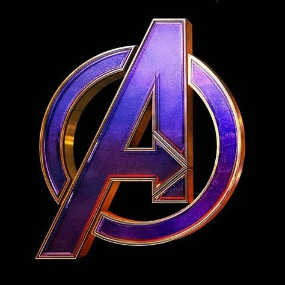

InfinityWatchRoad to Doomsday
—
giorni ad Avengers: Doomsday
al cinema dal 16 dicembre 2026
al cinema dal 16 dicembre 2026
—
Gemme dell'InfinitoIl Multiverso
Le Stats
0
Film visti
22
Da vedere
—
Voto medio
—
Fase attuale
Miglior film
—
Voti dati
—
I progressi sono salvati solo su questo dispositivo. Fai ogni tanto un backup e salvalo su iCloud Drive o Google Drive: se cancelli l'app, lo ricarichi e ritrovi tutto.
Nessun backup ancora